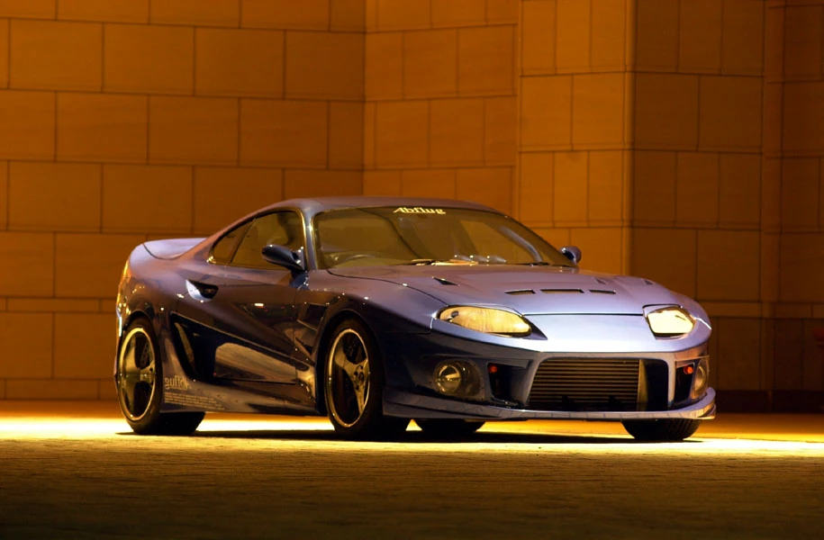

Toyota Supra A80

Icónico coche, famoso por la primera película de Fast and Furious, videojuegos y en la comunidad del mundo del tuning. Motor 2JZ (2JZ-GTE en su versión biturbo) es considerado uno de los mejores y más legendarios motores de alto rendimiento de la historia por su enorme resistencia ancestral pudiendo soportar hasta 1000 CV, su fiabilidad de fábrica and su capacidad extrema para soportar potencias muy superiores a las originales. Tiene infinitas posibilidades estéticas con ese diseño atemporal
(Toyota Supra S900 de AbFlug)